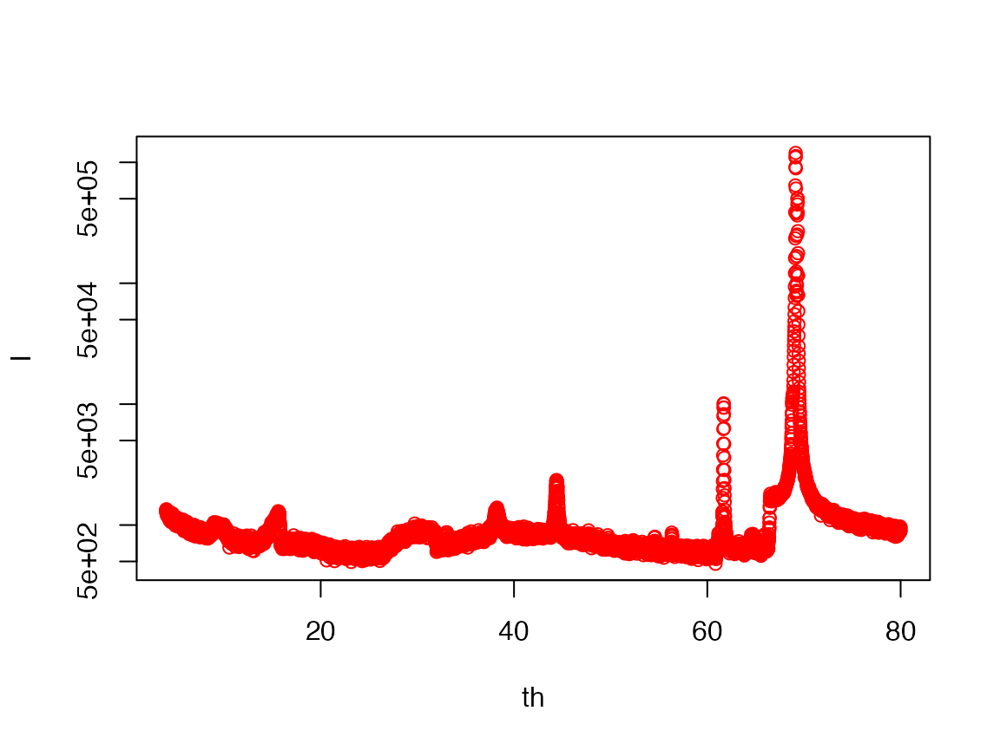
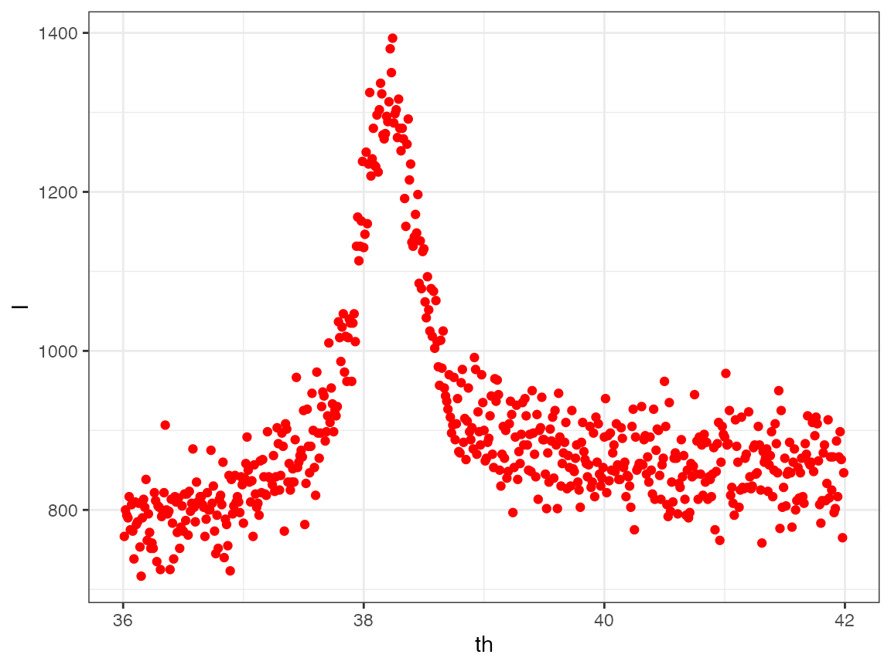

find XRD peaks
xrdFindPeaks.RmdObjective: Finding all the XRD peaks can be difficult, if the peaks are not prominent. Let us explore an algorithm, which eliminates areas, where fitting for a peak is not possible, and other areas, where fitting for a peak is straight-forward.
library(rigakuXRD)
library(dplyr)
#>
#> Attaching package: 'dplyr'
#> The following objects are masked from 'package:stats':
#>
#> filter, lag
#> The following objects are masked from 'package:base':
#>
#> intersect, setdiff, setequal, union
library(ggplot2)
# Loading the date
filename = xrd.getSampleFiles()[1]
d = xrd.read.ASC(filename)Plot different ranges, the following plot shows at least 6 peaks that should be found:
d = data.frame(th = d$theta, I = d$I)
plot(d, log='y', col='red')
Region

d1 = d %>% filter(th>36 & th<43)
p = xrd.peakEstimate(d1$th, d1$I, verbose=TRUE)
fit <- NULL
try(fit <-
nls(data = d1,
I ~ b + A*exp(-(th-t)^2/(2*s*s)),
start = list(b=p$b0, A = p$A0,
t=p$th0, s=p$s0))
); # does not stop in case of error
summary(fit)
#>
#> Formula: I ~ b + A * exp(-(th - t)^2/(2 * s * s))
#>
#> Parameters:
#> Estimate Std. Error t value Pr(>|t|)
#> b 8.464e+02 1.946e+00 435.01 <2e-16 ***
#> A 4.492e+02 8.155e+00 55.08 <2e-16 ***
#> t 3.822e+01 5.668e-03 6743.22 <2e-16 ***
#> s 2.743e-01 5.912e-03 46.40 <2e-16 ***
#> ---
#> Signif. codes: 0 '***' 0.001 '**' 0.01 '*' 0.05 '.' 0.1 ' ' 1
#>
#> Residual standard error: 45.76 on 695 degrees of freedom
#>
#> Number of iterations to convergence: 9
#> Achieved convergence tolerance: 2.843e-06